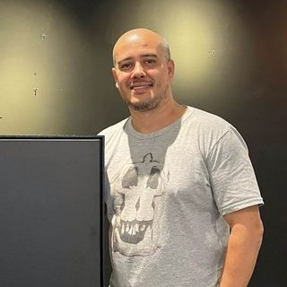

Flávio Veloso
Fundador · Direção Artística · Curadoria · Fotografia · Produção Cultural
Fotógrafo, produtor cultural e curador com mais de 25 anos de trabalho com imagem. Carioca radicado em Florianópolis, é graduado em Ciências Biológicas e tecnólogo em Fotografia. Suas fotografias foram publicadas por National Geographic, The Washington Post, O Globo e Veja e integraram campanhas de Citibank, Itaú, Uber e Emirates; uma delas inspirou a fragrância Still Life in Rio, da perfumaria francesa Olfactive Studio. Fundador da Pátria Grande, dirigiu a primeira edição do FLACA e o Cine Retrata, foi curador e depois diretor de programação do FICA Garopaba, curador do Cineclube Vozes Veladas e produtor executivo dos cineclubes Educa Ambiental e Pátria Grande. Idealizou e ministrou o Curso Básico de Fotografia Digital #Abrindoacaixapreta.